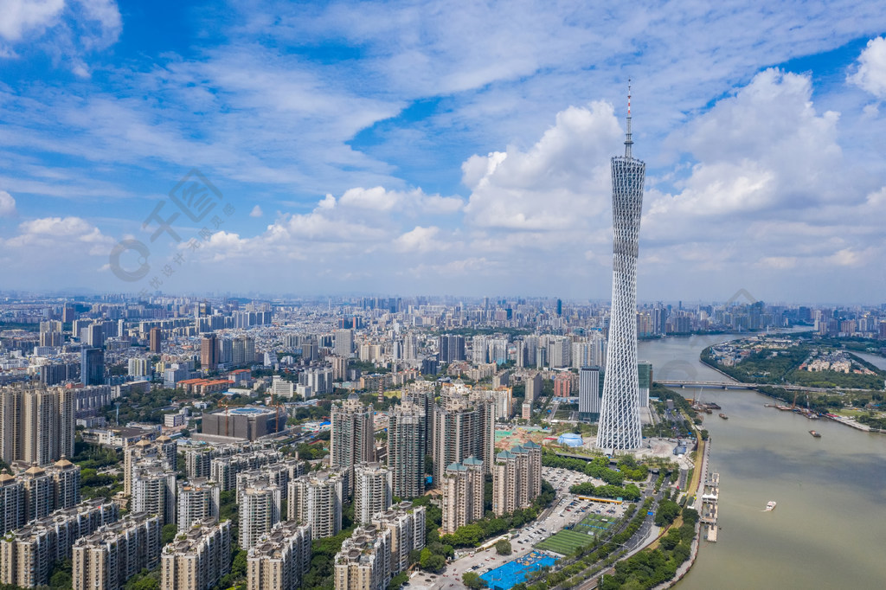

概要・歴史
広州塔（こうしゅうとう）は、中国広東省広州市海珠区の赤崗塔近くの珠江南岸にある塔である。 全高（尖塔高）600.0m、棟高（塔本体の地上高）454.0m。日本語では広州タワーとも呼ばれる。 かつての中国語名は、繁体字表記と簡体字表記（丸括弧内）。 「広州テレビ・観光塔（廣州電視觀光塔、广州电视观光塔）」のほか、「海心塔（海心塔）」「廣州電視塔（广州电视塔）」「廣州新電視塔（广州新电视塔）」とも呼ばれた。
2010年9月28日の一般公開に伴い、広州市は正式名称を「広州塔」とすると発表した。 英語名（事実上の国際通用名）は、Guangzhou TV & Sightseeing Towerであったが、こちらも「Canton Tower」となった。 塔内部の１階から屋上までのフロアは5つのブロック（Aゾーン - Eゾーンと呼ぶ）に分かれており、 テレビ・ラジオ等の放送・通信施設や展望台だけでなく、展示場、会議室、ホテル、回転レストラン、立体映画館、ゲームセンター、 各種店舗、庭園や空中回廊（CとDのゾーン間を結ぶコアの外側にある屋外螺旋階段）等、多くの施設を収容している。 ゾーンごとに50元、100元、150元と入場料が異なる。 Learning more
予約・基本情報
| 住所: | 広東省広州市海珠区 |
| アクセス: |
|
| 営業時間: | 9時30分〜22時30分 |
| 駐車場: |
|
| 所要時間目安: | コース次第 |
| 入場料(主なコース): |
|
| 入場時の注意事項: | パスポートを持っていきましよう |
| 事前予約: |
事前予約はおすすめです！ 公式サイトで予約しよう |